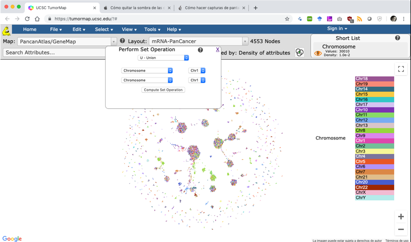

Problema:Analizar diferencias o similitudes entre conjuntos de datos genómicos.

Permitir al usuario: 1) seleccionar, de un listado de datos disponibles, los datos o grupos de datos para la operación. Al menos dos datos o grupos de datos del mismo tipo (p. ej. dos genes o dos grupos de genes) deben ser seleccionados para ejecutar la operación. La lista de datos disponible puede contener datos individuales o grupos de datos creados por el usuario a partir de los datos individuales; 2) seleccionar la operación de conjuntos a ejecutar. Las operaciones incluyen, entre otras, la unión, intersección y diferencia; 3) visualizar el resultado de la operación de varias maneras tales como un resumen cuantitativo, el detalle de los datos que cumplieron la operación o el resumen acompañado del detalle.
Una variación en la secuencia del punto 2 y 3, que se presenta en la Imagen 6.10, puede ser: 2) ejecutar todas las posibles operaciones entre los datos y mostrar los subconjuntos resultantes de las operaciones; 3) permitir al usuario seleccionar el o los subconjuntos de datos resultantes para ver su detalle.
El resultado de una operación es un nuevo conjunto de datos que puede ser almacenado en el listado de datos disponibles.
El patrón operación de conjuntos se crea instanciando la clase “SetOperationPanel”. El atributo “operators” contiene las posibles operaciones que se pueden realizar entre los datos. El atributo “selectedOperator” es la operación seleccionada por el usuario. Para realizar la operación de conjuntos, el sistema provee de una lista de conjuntos de datos de los cuales el usuario selecciona al menos dos datos o grupos de datos para ejecutar la operación. La lista de conjuntos de datos proviene de la clase “Sample” que representa a elementos del modelo conceptual que son sujetos a comparación (p. ej., genes, cromosomas, especies). El evento “run” procesa la operación de conjuntos.
La Imagen 6.10 es una sección de la interfaz de usuario del sitio ICGC Data Portal que muestra a través de un diagrama de Venn los resultados de las operaciones de conjuntos entre tres muestras de mutaciones (S1, S2, S3). Estas muestras son parte de las muestras disponibles en el sistema y han sido previamente seleccionadas por el usuario para la. Cada sector del gráfico indica el número de mutaciones resultantes de las operaciones correspondientes. El número 17 en el centro del diagrama, por ejemplo, indica el número de mutaciones resultantes de la intersección de las tres muestras (S1, S2, S3) y la unión de las tres muestras es la suma de todos los sectores dando como resultado 8205 mutaciones. El usuario de la interfaz puede seleccionar el o los conjuntos de resultados que utilizará para un posterior análisis.